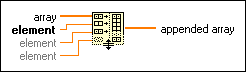

Build Array Function
Owning Palette: Array VIs and Functions
Requires: Base Development System
Concatenates multiple arrays or appends elements to an n-dimensional array.
You also can use the Replace Array Subset function to modify an existing array.
The connector pane displays the default data types for this polymorphic function.
Details Example

 Add to the block diagram Add to the block diagram |
 Find on the palette Find on the palette |
 |
array or element can be any n-dimensional array or scalar element. All inputs must be either elements and 1D arrays or n-dimensional and (n-1)-dimensional arrays. All inputs must have the same base type.
|
 |
appended array is the resulting array.
|
When you place the function on the block diagram, it has only one input available. Add inputs to the node by right-clicking an input and selecting Add Input from the shortcut menu or by resizing the node.
If you wire control references of different classes to this function, this function typecasts the references to a more generic class that is the lowest common class in the inheritance hierarchy. This function then returns appended array with that class.
The Build Array function operates in one of two modes depending on whether you select Concatenate Inputs from the shortcut menu. If you select Concatenate Inputs, the function appends all inputs in order, forming an output array of the same dimensionality as the array input wired.
If you do not select Concatenate Inputs, the function builds an output array of one dimension higher than the dimension of the inputs. For example, if you wire 1D array input to a Build Array function, the output is a 2D array, even if the 1D array is empty. The inputs must all be the same dimensionality. The function appends each input in order, forming a subarray, element, row, or page, of the output array. Inputs are padded, as necessary, to match the size of the longest input.
For example, if you wire two 1D arrays, {1, 2} and {3, 4, 5} to Build Array, and select Concatenate Inputs from the shortcut menu, the output is the 1D array {1, 2, 3, 4, 5}. If you wire the same two arrays to Build Array, and do not select Concatenate Inputs from the shortcut menu, the output is a 2D array containing {{1, 2, 0}, {3, 4, 5}}, where the first input is padded to match the length of the second input.
If the inputs are all arrays of the same dimensionality, right-click the function to remove the checkmark next to or select the Concatenate Inputs shortcut menu item. If the inputs do not have the same dimensionality, Concatenate Inputs is automatically selected and cannot be deselected. If all the inputs are scalar elements, Concatenate Inputs is automatically deselected and cannot be selected, and the output is a 1D array containing the elements in order.
When you select Concatenate Inputs from the shortcut menu, the glyphs in the Build Array icon change to distinguish between the two input types. Inputs with the same dimensionality as the output show an array glyph, while inputs with a dimensionality that is one less than the output show an element glyph.
Refer to the Build Array VI in the labview\examples\Arrays directory for an example of using the Build Array function.
 Open example Find related examples
Open example Find related examples